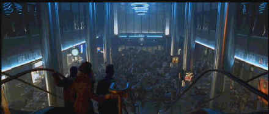

Columbia-Tristar/1998/139m/ANA,WS 2.35
 |
Typical Garden crowd.©Columbia-Tristar |
What you get with Godzilla
ain’t story and that’s probably the most consistent monster movie convention
of all. Hell, why expect story in a remake of a 1950’s monster movie. We’ve got
the effects to blow movie-goers out of their seats these days(No, not Sensurround, the
process installed under seats for the movie Earthquake.)and Godzilla runs
full tilt with those. A phalanx of missile armed helicopters chase Godzilla through
the streets of New York and then Godzilla chases them. I never could figure out why
they didn’t head to the sky to avoid the big guy. There are some tanks that get
crushed by a Godzilla paw, big guns firing away, and finally some swift jets
packing some hot shots. There are fewer one-liners than I would have expected from this
effort and I was grateful for that.
The effects team and director Roland Emmerich have a monstrous
good time in destroying New York landmarks, but ever since he blew up the White House in Independence
Day, Emmerich will have a hard time capturing an equivalent moment. This time he gets
to knock the Chrysler Building in half. I wonder if he needed permission to do in the
Empire State Building or the Twin Towers or maybe they’ve been downed in too many
movies already. The effects are very good indeed. Swipes of Godzilla’s tale
cut slices through buildings, half the city shakes when the big beast comes roaring down
the street. Take it from me, the Godzilla team does not skimp on destruction.
Matthew Broderick is less than effective as Mike Tatopoulos.
Broderick handled lizard duty in The Freshman with the right touch, but this time
he can’t figure out how to make a lizard souffle. Maria Potillo is positively right
out of Nancy Drew as Audrey Timmons(Do we have an allusion to Little Shop of Horrors
here?). Hank Azaria gets to run around with a camera lot, but whatever happened to Agedor
Spartacus in The Birdcage? Well, I guess it’s a good payday? What’s Jean
Reno doing here playing a French Secret Service Agent? He’s going to get a reputation
as a car chase specialist what with his recent work in John Frankenheimer’s Ronin.
So, how good is the disc. It’s terrific. The Godzilla DVD
is big, bold and noisy. Most of the action takes place either in the rain, at night, or in
dimly lit interiors, but the outstanding transfer contrast balance provides sustained
image clarity in every situation. Explosive transitions are smooth. The Dolby Digital 5:1
surround is commensurate with the sheer size of the film. During many of the destruction
sequences, surround information is all over the place. The subtlety and accuracy of the
mix shine in the quieter patches. Check out the dripping in water in the left surround.
And Godzilla’s heavy breathing feels like its spewing the hot breadth of
monster all over you. Front to rear and side to side pans are swift, defined and dynamic.
When those helicopters are buzzing through the city, they are buzzing through the home
theater as well. Bass is big enough to shake the foundations of most home theater chairs.
The sound mix pushes enough air through the speakers to shake with every Godzilla
gyration.
DVD menus are displaying increasing creativity. Ease of interface
is most important, but Godzilla’s rockin’ menu system is a small bonus
worth a broad smile. The Godzilla special editon includes an audio commentary by
the effects team which consistently explains the marvels of the new movie technology. Also
included is a short featurette that was obviously made as a promo film. A single screen
shot comparison of before and after effects of computer animation simply serves to whet a
viewers appetite for a more thorough treatment of the effects.
 ã1998
Stuart J. Kobak , all rights reserved.
ã1998
Stuart J. Kobak , all rights reserved.